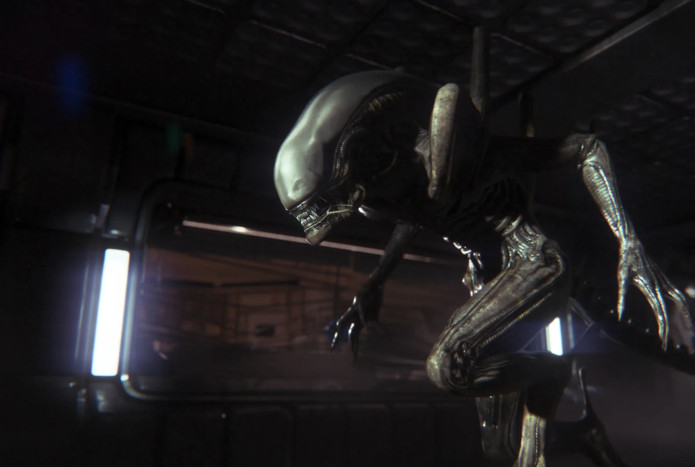
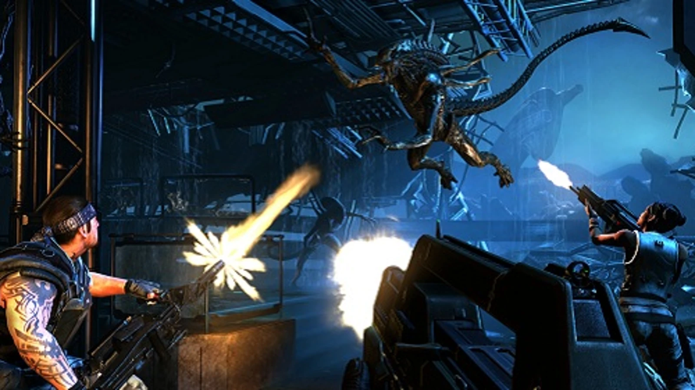
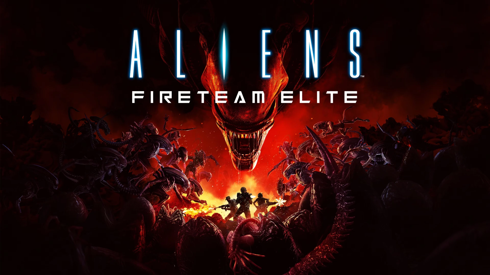
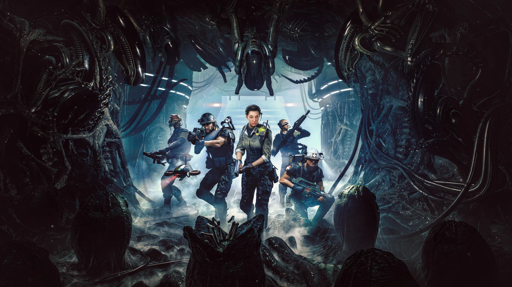
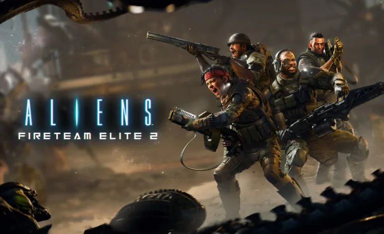

The Alien Games
Beyond the films, the Alien franchise has inspired a number of video games. They range from tense survival horror to squad-based tactics, and several of them expand the story of the films in ways the movies never explored.
| Title | Year | Developer | Genre |
|---|---|---|---|
| Aliens: Colonial Marines | 2013 | Gearbox Software | First-person shooter |
| Alien: Isolation | 2014 | Creative Assembly | Survival horror |
| Aliens: Fireteam Elite | 2021 | Cold Iron Studios | Co-op third-person shooter |
| Aliens: Dark Descent | 2023 | Tindalos Interactive | Real-time tactics |
| Aliens: Fireteam Elite 2 | 2026 | Cold Iron Studios | Co-op third-person shooter |
Alien: Isolation (2014)
Set fifteen years after the original film, Alien: Isolation follows Amanda Ripley, Ellen Ripley's daughter, as she searches for answers about her mother aboard the space station Sevastopol. Rather than fighting, the player must hide from a single Xenomorph that actively hunts them, relying on a motion tracker and careful movement to survive. It is widely considered one of the best horror games ever made.

The Xenomorph stalking the halls of Sevastopol Station in Alien: Isolation. (theverge.com)
Aliens: Colonial Marines (2013)
Aliens: Colonial Marines is a first-person shooter set after the events of Alien 3, in which a new squad of Marines investigates the missing warship Sulaco. Although fans were excited to play as the Marines, the game was heavily criticized at launch for technical problems and for looking noticeably worse than the demos shown before release.

Marines open fire on a leaping Xenomorph in Aliens: Colonial Marines. (rockpapershotgun.com)
Aliens: Fireteam Elite (2021)
Aliens: Fireteam Elite is a cooperative shooter in which a team of up to three players fights through waves of Xenomorphs. It focuses on teamwork, with each player choosing a class and upgrading their weapons between missions.

Key art for Aliens: Fireteam Elite, showing a fireteam surrounded by a swarm. (playstation.com)
Aliens: Dark Descent (2023)
In Aliens: Dark Descent, the player commands a squad of Colonial Marines in real time on the moon Lethe. Squad members build up stress and injuries over the course of a mission, and any Marine who dies is lost permanently, which makes every decision feel important.

Key art for Aliens: Dark Descent, showing a squad entering a Xenomorph hive. (shacknews.com)
Aliens: Fireteam Elite 2 (2026)
Aliens: Fireteam Elite 2 is the sequel to Fireteam Elite, again developed by Cold Iron Studios. It expands the cooperative formula to four players, who work together to complete objectives while holding off swarms of Xenomorphs.

Key art for Aliens: Fireteam Elite 2. (games.mxdwn.com)
My Thoughts
I am looking forward to playing Aliens: Fireteam Elite 2.